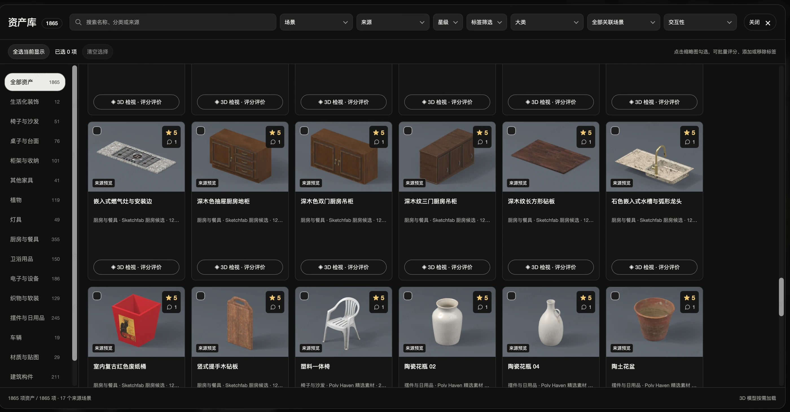
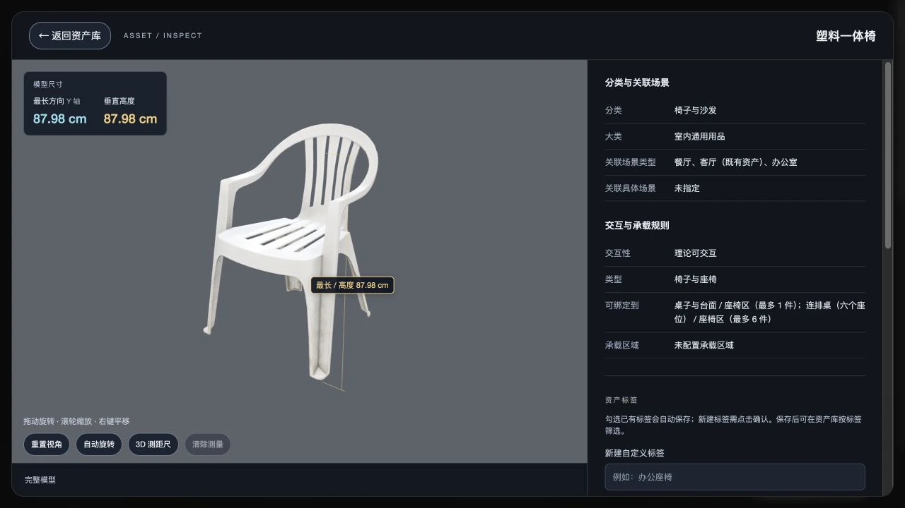

Robotics & simulation.
仿真算法研发工程师
从自动驾驶到机器人，关注物理与视觉联合仿真、场景生成和闭环评测。
Loading demos…
VLN 仿真 · vslam建图+导航
VLA 仿真 · 橙子抓取回放
4D 高斯重建 · 同向车辆移除
AEB 系统研发工程师
泊车感知 USS 算法工程师
生成效果展示；未验证物理任务成功率。
四轮迭代后仍未通过视觉验收，存在手部形变。
Wan 生成片段＋镜头后处理；相机参数未经实车标定。


视频加载失败。打开视频文件 ↗